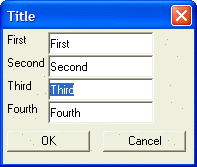

Text Box * Directive
Syntax
%*%
Description
The * directive defines the Text Box whose text will be auto-selected. When you have multiple directives in a Format string, you separate them with semi-colons ";".
Example
The following script displays a dialog where the text in the third field is auto-selected.
|
first = "First" second = "Second" third = "Third" fourth = "Fourth" ui_dlg_box("Title",<<%dlg% {region} First|[%*%.20first]; Second |[%*%.20second]; Third |{initial_focus}[%*%.20third]; Fourth|[%*%.20fourth] {endregion}; {region} <*15&OK> <15&Cancel> {endregion} %dlg% ) |

See Also
Xdialog Language Directives and Operators, Text Box Syntax